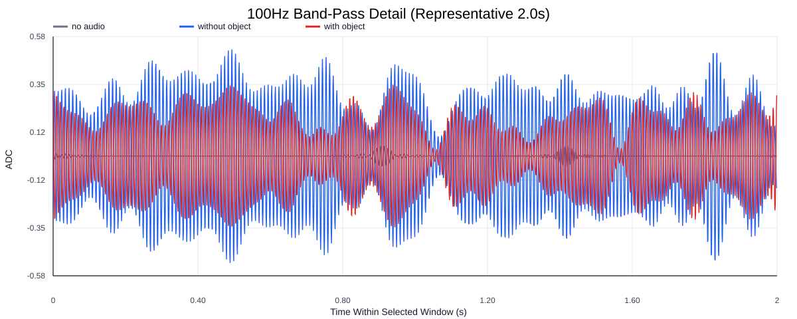
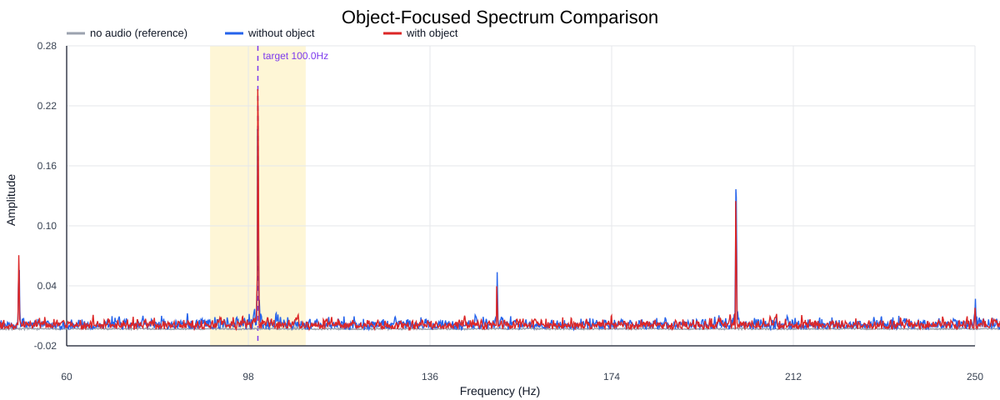
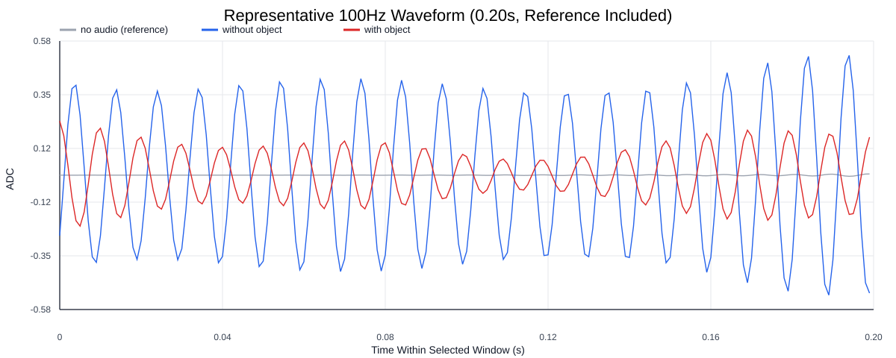
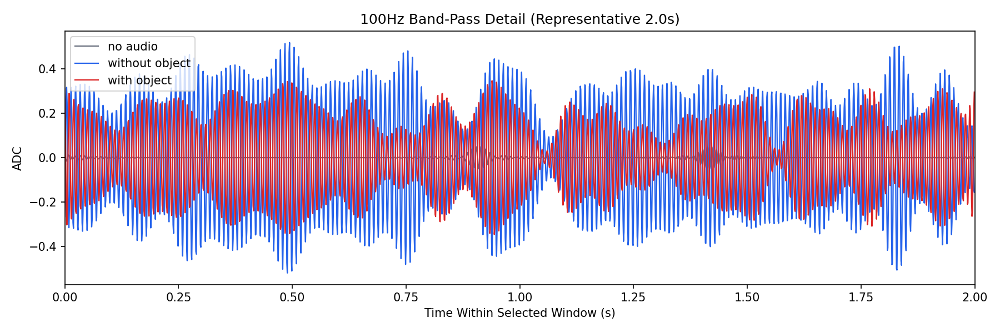
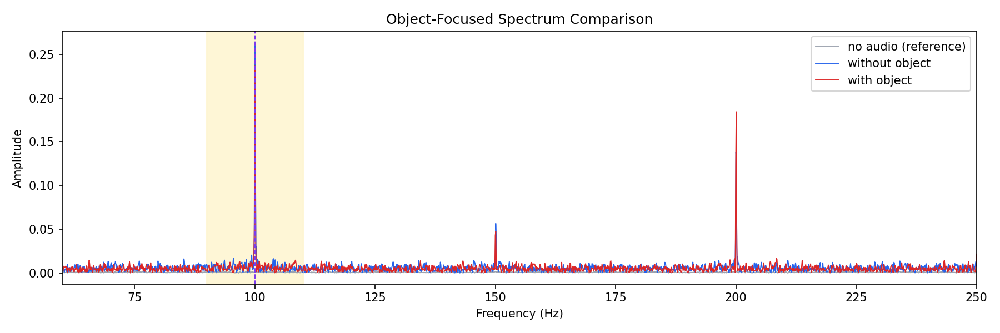
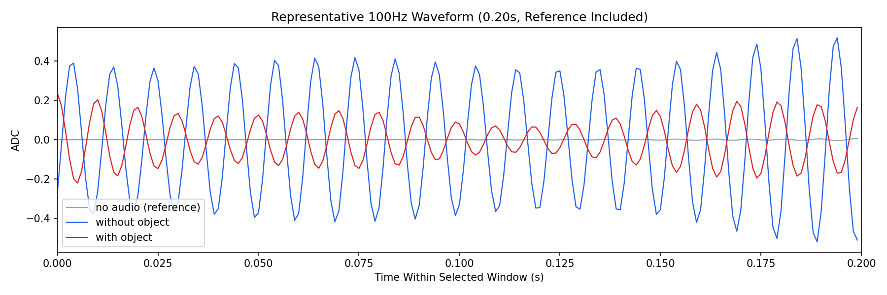

Background: F:\项目类文件夹\异物检测4.10\Data_Dual\frequency_sweep\0100Hz\repeat_02\raw\no_audio.csv
Without object: F:\项目类文件夹\异物检测4.10\Data_Dual\frequency_sweep\0100Hz\repeat_02\raw\without_object.csv
With object: F:\项目类文件夹\异物检测4.10\Data_Dual\frequency_sweep\0100Hz\repeat_02\raw\with_object.csv
| Metric | 无音频 | 100Hz无异物 | 100Hz有异物 | 无异物/无音频 | 有异物/无异物 | 有异物/无音频 |
|---|---|---|---|---|---|---|
| centered_rms | 0.044828 | 0.367232 | 0.361134 | 8.1920 | 0.9834 | 8.0559 |
| raw_target_amp | 0.001725 | 0.263328 | 0.236541 | 152.6515 | 0.8983 | 137.1234 |
| filtered_rms | 0.010204 | 0.201528 | 0.206302 | 19.7501 | 1.0237 | 20.2180 |
| filtered_target_amp | 0.001725 | 0.263328 | 0.236541 | 152.6515 | 0.8983 | 137.1234 |
| filtered_energy_ratio | 0.051811 | 0.301154 | 0.326340 | 5.8125 | 1.0836 | 6.2986 |
| window_filtered_target_amp_mean | 0.003444 | 0.267802 | 0.273013 | 77.7509 | 1.0195 | 79.2638 |
| window_filtered_target_amp_std | 0.005802 | 0.054999 | 0.072427 | 9.4791 | 1.3169 | 12.4830 |





